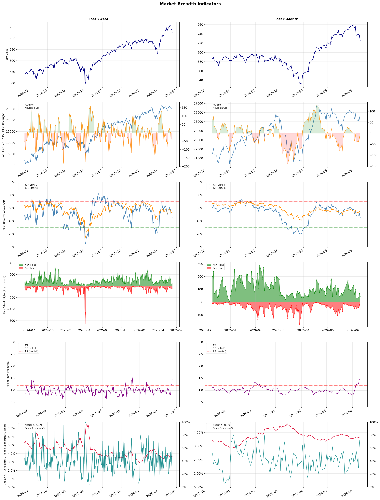

A daily research map of market breadth, industry rotation, and technical setups
| Item | Read |
|---|---|
| Regime downgraded | Selective Risk-On → Neutral |
| Regime | Neutral |
| Risk posture | Cautious |
| Indices | QQQ 693.69 (-2.0% today) |
| Universe | 1,700 stocks tracked · 46 new 52-week highs · 30 active swing setups |
| Breadth | only 45.1% of tracked stocks are above SMA50, new lows exceed new highs (54 vs 46), McClellan oscillator (breadth momentum) is negative at -41.9 |
| Leadership | Trucking, REIT - Hotel & Motel, and Healthcare Plans |
| Weakest groups | Utilities - Independent Power Producers, Other Precious Metals & Mining, and Gold |
Use this report to prioritize research and chart review; validate entries, stops, liquidity, earnings, and risk before acting.
| Item | Read |
|---|---|
| Primary read | Neutral regime with Cautious risk posture. |
| Research queue | RXO, WERN, KNX, ODFL, XPO |
| Leadership focus | Trucking, REIT - Hotel & Motel, and Healthcare Plans |
| Caution list | Utilities - Independent Power Producers, Other Precious Metals & Mining, and Gold |
| Review prompt | Check extension risk, chart location, fundamentals, valuation, and earnings before using any research row. |
| Item | Read |
|---|---|
| Primary read | 4 active risk warnings; use screen output as watchlist input only. |
| Bullish screens | CLOV, HUM, TJX, CDP, PENN |
| Bearish screens | DOX, ALKT, BILL, GTM |
| Alerts / levels | Automated trigger, stop, ATR, liquidity, reward/risk, and event-risk levels are pending future enrichment. |
| Review prompt | Open the linked chart, define trigger and invalidation, then check liquidity and event risk independently. |
Risk Posture: Cautious — screen backdrop is selective; prioritize research in top-ranked groups
Metric context: McClellan below -50 = elevated selling pressure; below -100 = washout territory. Range Expansion = share of stocks with daily range above their 20-day average. Signal Density = share of tracked names appearing in signal screens.
| Breadth Date | % > SMA50 | % > SMA200 | New Highs | New Lows | McClellan | Median Range | Avg Range | Median ATR14 | Range Expansion | Signal Density |
|---|---|---|---|---|---|---|---|---|---|---|
| 2026-06-10 | 45.1% | 52.6% | 46 | 54 | -41.9 | 3.5% | 4.1% | 3.6% | 52.5% | 0.8% |

Regime downgraded: Selective Risk-On → Neutral
Prior comparison date: June 9, 2026
| Metric | Prior | Current | Change |
|---|---|---|---|
| Regime | Selective Risk-On | Neutral | changed |
| Risk Posture | Cautious | Cautious | unchanged |
| % > SMA50 | 51.2% | 45.1% | -6.2 pts |
| % > SMA200 | 54.9% | 52.6% | -2.3 pts |
| New Highs | 69 | 46 | -23 |
| New Lows | 20 | 54 | -34 |
Top-10 industries entering: Steel. Top-10 industries leaving: Footwear & Accessories. New multi-signal long setups: AKAM, AMRX, BAC, CCEP, CLOV, CNK, EXR, FOX, GBDC. New multi-signal short setups: ALKT.
| Status | Tickers | Read |
|---|---|---|
| Added | AKAM, ALKT, AMRX, BAC, CCEP, CLOV, CNK, EXR | New technical screen matches vs prior report. |
| Removed | BNL, BNS, CFFN, CNC, CPT, CROX, ELV, EWBC | No longer present in today's technical screen matches. |
| Still Active | BILL, CDP, DOX, FBP, GEO, GTM, HUM, NNN | Appeared in both current and prior reports. |
| Promoted | NNN | Model Screen Score improved by at least 15 points. |
| Downgraded | none | Model Screen Score declined by at least 15 points. |
| Direction | Industry | ETF | Prior Rank | Current Rank | Days | Rank Change |
|---|---|---|---|---|---|---|
| Rose | Diagnostics & Research | N/A | 98 | 9 | 42 | +89 |
| Rose | Footwear & Accessories | N/A | 94 | 13 | 28 | +81 |
| Rose | Apparel Retail | XRT | 96 | 19 | 28 | +77 |
| Rose | Residential Construction | ITB | 88 | 20 | 14 | +68 |
| Rose | Solar | TAN | 87 | 25 | 42 | +62 |
Bull: The Diagnostics & Research sector is experiencing a rising relative strength due to increasing investor confidence in healthcare stocks, as highlighted by Morningstar's identification of top healthcare investments and the notable upside potential for companies like Agilent Technologies. Additionally, the sector-wide rally, exemplified by Waters' 5.3% jump, suggests a broader market trend favoring diagnostics and research firms, likely driven by advancements in AI applications in healthcare, which are attracting attention from investors looking for innovative growth opportunities.
Bear: While the Diagnostics & Research sector may currently exhibit rising relative strength and investor interest, this optimism could be overly inflated and unsustainable. The recent headlines, particularly the significant sell-off of Adaptive Biotechnologies shares by Harvest Investment Services, indicate potential underlying concerns about valuations and future growth prospects within the sector. Furthermore, reliance on AI advancements may be premature, as the practical implementation and regulatory hurdles could hinder the expected benefits, leading to a potential correction in stock prices as reality sets in.
Verdict: The Diagnostics & Research sector is currently benefiting from heightened investor confidence driven by advancements in AI applications and a broader market rally, as evidenced by significant stock movements in companies like Agilent Technologies and Waters. However, the key risk lies in the potential overvaluation of these stocks, particularly in light of recent sell-offs like that of Adaptive Biotechnologies, which may indicate underlying concerns about sustainable growth and the practical challenges of AI integration in healthcare. Investors should remain cautious and closely monitor market sentiment and regulatory developments that could impact valuations.
Sources: Google News
Bull: The Footwear & Accessories industry is experiencing a rising relative strength due to favorable industry trends highlighted in recent headlines, such as the anticipated growth phase for shoe and retail apparel stocks, as noted by Yahoo Finance. Additionally, the sector-wide rally, exemplified by Crocs' 6.7% jump, suggests strong consumer demand and positive market sentiment, which are further supported by the overall resilience of consumer discretionary spending in the apparel and accessories segment. This combination of consumer enthusiasm and robust industry forecasts positions the Footwear & Accessories sector for continued growth.
Bear: While recent headlines may suggest a positive outlook for the Footwear & Accessories industry, it is crucial to consider the potential headwinds that could undermine this growth narrative. Rising inflation and interest rates may pressure consumer discretionary spending, leading to reduced demand for non-essential items like footwear and accessories. Additionally, the sector's recent rally, exemplified by Crocs' performance, could be driven more by short-term market sentiment rather than sustainable growth fundamentals, raising concerns about the longevity of this upward trend.
Verdict: The Footwear & Accessories industry's recent rise can be attributed to strong consumer demand and positive market sentiment, bolstered by a sector-wide rally and favorable forecasts for retail apparel stocks. However, a key risk to this growth narrative is the potential impact of rising inflation and interest rates, which could dampen consumer discretionary spending and challenge the sustainability of this upward trend. Investors should closely monitor economic indicators and consumer spending patterns to assess the longevity of the industry's momentum.
Sources: Google News
Bull: The Apparel Retail sector is experiencing a rise in relative strength due to positive investor sentiment driven by strong earnings performances from key players like Boot Barn Holdings and Shoe Carnival, which have outperformed expectations, as highlighted in recent headlines. Additionally, the sector is benefiting from a rebound in consumer spending, as indicated by the positive inflation data that suggests a stable economic environment, further bolstering confidence in retail stocks within the industry. This combination of strong earnings and favorable economic indicators positions the Apparel Retail sector favorably compared to other industries.
Bear: While the Apparel Retail sector may currently show rising relative strength due to a few standout performers, this could be misleading in the context of broader economic uncertainties, including renewed geopolitical tensions and mixed economic data. The recent positive earnings from companies like Boot Barn and Shoe Carnival may not be sustainable if consumer sentiment shifts due to inflationary pressures or if discretionary spending declines, which could lead to a broader downturn in the sector as consumers prioritize essential goods over apparel. Additionally, the volatility in equity futures and the mixed signals from economic indicators suggest that the current optimism may be short-lived, making the sector vulnerable to a correction.
Verdict: The Apparel Retail sector's rise is primarily driven by strong earnings from key players like Boot Barn Holdings and Shoe Carnival, alongside a rebound in consumer spending supported by positive inflation data, which has bolstered investor confidence. However, a key risk lies in potential shifts in consumer sentiment due to inflationary pressures and economic uncertainties, which could lead to decreased discretionary spending and a subsequent downturn in the sector. Investors should remain cautious and monitor economic indicators closely to assess the sustainability of this upward trend.
Sources: Yahoo Finance, Google News
Bull: The rising relative strength of the Residential Construction sector, as indicated by the ITB ETF, is primarily driven by declining mortgage rates, which have recently fallen to 6.51%, making home purchases more affordable and stimulating demand for new homes. Additionally, positive sentiment from major investors like Berkshire Hathaway, coupled with a sector-wide rally exemplified by Toll Brothers' 6.6% jump, suggests growing confidence in the market, positioning homebuilder stocks as attractive investments amidst a favorable macroeconomic backdrop.
Bear: While the recent decline in mortgage rates may provide a temporary boost to home affordability, the current rate of 6.51% is still historically high and could deter potential buyers, especially first-time homeowners who are most sensitive to financing costs. Additionally, the sector's rally, fueled by sentiment from major investors like Berkshire Hathaway, may overlook fundamental challenges such as rising construction costs, labor shortages, and potential economic headwinds, including inflation and a possible recession, which could dampen long-term demand for new homes.
Verdict: The recent strength in the Residential Construction sector, as reflected by the ITB ETF, is primarily driven by declining mortgage rates, making home purchases more accessible and boosting demand for new homes. However, the key risk lies in the still historically high mortgage rates and persistent challenges such as rising construction costs and labor shortages, which could hinder long-term growth and deter potential buyers, particularly first-time homeowners. Investors should remain cautious and monitor these fundamental challenges while considering exposure to homebuilder stocks.
Sources: Yahoo Finance, Google News
Bull: The solar industry is experiencing a significant rise in relative strength due to a confluence of factors, including a strong year-to-date performance highlighted by a 120% gain over the past five months, as noted in the recent headlines. Additionally, the global shift towards renewable energy sources, with wind and solar overtaking gas, underscores a growing commitment to environmentally friendly energy solutions, which positions solar ETFs like TAN to benefit from increased investment and favorable policy support. The recent achievement of a new 52-week high for TAN further reflects the market's positive sentiment and confidence in the sector's growth potential.
Bear: While the solar industry has seen impressive gains recently, this performance may be more reflective of a short-term market rally rather than sustainable growth, especially given the potential for rising interest rates to impact capital-intensive sectors like solar. Additionally, the rapid ascent of solar stocks could lead to overvaluation, as investors may be overlooking the ongoing supply chain challenges, regulatory uncertainties, and competition from other renewable sources that could hinder long-term profitability and market stability.
Verdict: The solar industry's recent surge is fundamentally driven by a strong global shift towards renewable energy, bolstered by favorable policy support and significant year-to-date performance, as evidenced by the 120% gain in solar ETFs like TAN. However, investors should remain cautious of the key risk posed by rising interest rates, which could impact the capital-intensive nature of solar projects and potentially lead to overvaluation amid ongoing supply chain challenges and regulatory uncertainties.
Sources: Yahoo Finance, Google News
| Direction | Industry | ETF | Prior Rank | Current Rank | Days | Rank Change |
|---|---|---|---|---|---|---|
| Fell | Copper | COPX | 6 | 88 | 7 | -82 |
| Fell | Other Industrial Metals & Mining | N/A | 7 | 84 | 35 | -77 |
| Fell | Uranium | URA | 20 | 95 | 35 | -75 |
| Fell | Chemicals | N/A | 13 | 86 | 28 | -73 |
| Fell | Other Precious Metals & Mining | N/A | 25 | 97 | 28 | -72 |
Bear: While the bull analyst raises valid points about weakening global manufacturing impacting copper demand, it's crucial to consider that the broader economic landscape is also shifting towards sustainability and green technologies, which could create long-term demand for copper in renewable energy infrastructure. However, the current relative strength trend is falling, indicating that the market may be overestimating this demand amid economic uncertainties. Furthermore, the allure of AI and alternative investments could lead to a prolonged period of capital diversion away from traditional commodities, leaving copper vulnerable to further price declines as investor sentiment shifts.
Bull: Copper's relative strength is likely falling due to concerns over global manufacturing weakening, as highlighted in the headline "If Global Manufacturing Weakens, Here’s What Happens to This Copper ETF." This uncertainty can dampen demand for copper, traditionally a key industrial metal, particularly in sectors like construction and manufacturing. Additionally, the focus on emerging themes like AI and alternative energy may be diverting investor attention and capital away from traditional commodities like copper, as indicated by the headline discussing market themes driving stocks.
Verdict: The copper industry is experiencing a decline primarily due to concerns over weakening global manufacturing, which is dampening demand for this key industrial metal. However, the bear case highlights a significant risk: the potential for a long-term shift towards sustainability and green technologies, which could eventually bolster copper demand as infrastructure for renewable energy expands. Investors should remain cautious, as the current trend suggests that short-term pressures may outweigh these long-term opportunities, leading to further price declines in the near term.
Sources: Yahoo Finance, Google News
Bear: While the bull analyst attributes the relative weakness in the Other Industrial Metals & Mining sector to competition and technological advancements, a more pressing concern is the potential oversupply and declining demand for certain industrial metals, particularly in light of economic slowdowns and reduced manufacturing activity globally. Additionally, the focus on AI-powered solutions may not translate into immediate financial benefits, as the initial investments in technology could strain margins and lead to further volatility in an already shaky sector. This suggests that the challenges facing the Other Industrial Metals & Mining category are more fundamental and systemic than merely a shift in investor sentiment.
Bull: The relative weakness in the Other Industrial Metals & Mining sector can likely be attributed to a combination of heightened competition and evolving technological advancements, as highlighted by the Boston Consulting Group's focus on AI-powered mining solutions. Additionally, the recent emphasis on top stock picks in the broader metals sector, as noted by BofA and Morningstar, suggests that investors may be favoring more specialized or emerging segments within the metals industry, diverting attention and capital away from the Other Industrial Metals & Mining category. This shift in investor sentiment and market focus could be contributing to its declining relative strength.
Verdict: The decline in the Other Industrial Metals & Mining sector is primarily driven by oversupply and weakening demand due to global economic slowdowns, which are exacerbated by reduced manufacturing activity. While technological advancements like AI-powered mining solutions could eventually enhance efficiency, the initial investment costs may pressure margins in the short term, posing a significant risk to profitability. Investors should closely monitor economic indicators and production levels to gauge the sector's recovery potential amidst these fundamental challenges.
Sources: Google News
Bear: While the bull analyst highlights the potential of uranium as a key energy player, the recent decline in relative strength suggests underlying weaknesses that cannot be overlooked. The increasing competition from alternative energy sources, coupled with the uncertainty surrounding nuclear policy and regulatory challenges, may hinder uranium's growth trajectory. Additionally, the liquidity concerns surrounding smaller ETFs like NUKZ indicate that investor confidence in uranium may be waning, raising doubts about its ability to attract sustained capital in a shifting energy landscape.
Bull: The recent decline in the relative strength of uranium may be attributed to the heightened focus on alternative energy sources and technologies, particularly in the context of the accelerating energy demands from AI and data centers, as highlighted in headlines discussing the race for energy solutions. Additionally, the emergence of competing ETFs and themes, such as AI and alt energy, could be drawing investor attention away from uranium, despite its potential as a key player in meeting future energy needs. This shift suggests that while uranium remains a critical component of the energy landscape, its current visibility and attractiveness are being overshadowed by the rapid growth and investment in alternative energy solutions.
Verdict: The recent decline in the uranium industry can be attributed to a shift in investor focus towards alternative energy sources and technologies, particularly as demand for energy solutions grows in sectors like AI and data centers. A key risk highlighted by the bear thesis is the uncertainty surrounding nuclear policy and regulatory challenges, which could further dampen investor confidence and hinder uranium's growth potential in an increasingly competitive energy landscape. Investors should closely monitor these regulatory developments and the performance of uranium-focused ETFs to gauge future capital flows into the sector.
Sources: Yahoo Finance, Google News
Bear: While the bull analyst highlights geopolitical tensions and emerging opportunities, the declining relative strength trend in the chemicals sector suggests deeper, systemic issues that may not be easily resolved. The underperformance of key players like Air Products and Chemicals (APD) indicates a lack of confidence in the sector's growth trajectory, and the focus on short-term volatility overlooks the longer-term challenges of overcapacity, regulatory pressures, and the shift towards sustainable alternatives, which could further erode margins and profitability in the chemicals industry.
Bull: The Chemicals sector is experiencing a decline in relative strength primarily due to macroeconomic pressures and competitive dynamics highlighted in recent headlines. The ongoing geopolitical tensions, particularly the Iran war impacting petrochemical competitors, have created volatility in supply chains and pricing, which may be weighing on investor sentiment. Additionally, while the broader market shows resilience, specific stocks like Air Products and Chemicals (APD) are underperforming, suggesting that investor confidence in the sector's growth potential is currently subdued despite emerging opportunities in chemicals and agriculture, as noted by Morningstar.
Verdict: The chemicals sector's decline is primarily driven by macroeconomic pressures, geopolitical tensions affecting supply chains, and a lack of investor confidence, as evidenced by the underperformance of key players like Air Products and Chemicals (APD). The key risk highlighted by the bear case is the potential for systemic issues such as overcapacity and regulatory pressures to exacerbate profitability challenges, suggesting that investors should closely monitor these factors before committing capital to the sector.
Sources: Google News
Bear: While the bull analyst attributes the relative weakness in the Other Precious Metals & Mining sector to a shift in investor focus towards gold, this may also reflect fundamental issues within the sector itself, such as declining production rates, rising operational costs, and regulatory challenges that are not present in the gold market. Additionally, the broader economic environment, including tightening monetary policy and potential recessions, could further dampen demand for other precious metals, leading to a more prolonged downturn in this sector regardless of gold's performance.
Bull: The relative weakness in the Other Precious Metals & Mining sector can be attributed to a broader market focus on gold stocks, as highlighted in multiple recent headlines discussing top picks and investment strategies specifically targeting gold and precious metals for 2026. This shift in investor attention, particularly towards gold, may be driven by rising inflation concerns and geopolitical uncertainties, leading to a preference for more established and traditionally safe-haven assets like gold, thereby sidelining other precious metals and mining stocks. As a result, the relative strength of the Other Precious Metals & Mining sector has declined compared to its gold-centric counterparts.
Verdict: The decline in the Other Precious Metals & Mining sector is primarily driven by fundamental challenges such as declining production rates, rising operational costs, and regulatory hurdles, which are exacerbated by a broader economic environment of tightening monetary policy and potential recessions. Investors are increasingly favoring gold due to its status as a safe-haven asset amid inflation and geopolitical uncertainties, sidelining other precious metals that lack similar demand drivers. The key risk lies in the potential for prolonged weakness in this sector, as economic conditions may further suppress demand and investment in non-gold precious metals.
Sources: Google News
| Industry | Rank | ETF | 7d | 14d | 28d | 42d | Chg 42d | Size | 20D | 60D | Composite | Active Setups |
|---|---|---|---|---|---|---|---|---|---|---|---|---|
| Trucking | 1 | IYT | 5 | 11 | 30 | 6 | +5 | 5 | 27.0% | 58.5% | 0.980 | 0 |
| REIT - Hotel & Motel | 2 | XLRE | 8 | 9 | 17 | 9 | +7 | 7 | 16.4% | 32.9% | 0.949 | 1 |
| Healthcare Plans | 3 | IHF | 12 | 10 | 4 | 10 | +7 | 11 | 12.1% | 62.0% | 0.938 | 2 |
| REIT - Office | 4 | XLRE | 13 | 15 | 27 | 40 | +36 | 10 | 11.4% | 26.4% | 0.895 | 2 |
| Semiconductors | 5 | SOXX | 1 | 1 | 1 | 1 | -4 | 36 | 6.3% | 80.5% | 0.889 | 2 |
| Resorts & Casinos | 6 | N/A | 16 | 27 | 63 | 38 | +32 | 7 | 16.7% | 18.2% | 0.869 | 2 |
| Computer Hardware | 7 | XLK | 2 | 2 | 3 | 4 | -3 | 14 | 3.9% | 47.8% | 0.865 | 1 |
| Electronic Components | 8 | XLK | 3 | 5 | 7 | 7 | -1 | 9 | 5.1% | 47.5% | 0.840 | 1 |
| Diagnostics & Research | 9 | N/A | 19 | 32 | 76 | 98 | +89 | 21 | 15.1% | 18.3% | 0.829 | 3 |
| Steel | 10 | SLX | 10 | 7 | 10 | 14 | +4 | 6 | 3.8% | 35.3% | 0.825 | 0 |
Rank columns (7d–42d) show the industry's rank that many trading days ago — lower is stronger. Chg 42d = rank change vs 42 trading days ago — positive means the industry moved up. 20D and 60D are the mean stock return within the industry over that period. Active Setups: count of today's swing-trade candidates from this industry appearing across all signal screens.
| Industry | Rank | ETF | 7d | 14d | 28d | 42d | Chg 42d | Size | 20D | 60D | Composite | Active Setups |
|---|---|---|---|---|---|---|---|---|---|---|---|---|
| Utilities - Independent Power Producers | 98 | XLU | 77 | 74 | 88 | 65 | -33 | 5 | -12.7% | -13.3% | 0.036 | 1 |
| Other Precious Metals & Mining | 97 | N/A | 75 | 72 | 25 | 96 | -1 | 5 | -29.3% | -26.0% | 0.049 | 1 |
| Gold | 96 | GDX | 78 | 85 | 49 | 94 | -2 | 31 | -26.0% | -24.4% | 0.057 | 1 |
| Uranium | 95 | URA | 82 | 95 | 58 | 69 | -26 | 6 | -28.1% | -24.6% | 0.072 | 1 |
| Agricultural Inputs | 94 | N/A | 84 | 68 | 53 | 71 | -23 | 7 | -11.3% | -12.0% | 0.112 | 2 |
| Financial Data & Stock Exchanges | 93 | N/A | 96 | 91 | 64 | 83 | -10 | 7 | -6.9% | -7.5% | 0.157 | 0 |
| Auto Manufacturers | 92 | N/A | 38 | 48 | 67 | 84 | -8 | 10 | -5.8% | -9.2% | 0.182 | 2 |
| Information Technology Services | 91 | XLK | 79 | 84 | 92 | 86 | -5 | 31 | -3.8% | -9.5% | 0.190 | 3 |
| Internet Retail | 90 | N/A | 81 | 75 | 75 | 51 | -39 | 15 | -3.9% | -5.0% | 0.200 | 2 |
| REIT - Mortgage | 89 | N/A | 93 | 94 | 81 | 57 | -32 | 15 | -4.0% | -2.7% | 0.202 | 3 |
Rank columns (7d–42d) show the industry's rank that many trading days ago — lower is stronger. Chg 42d = rank change vs 42 trading days ago — positive means the industry moved up. 20D and 60D are the mean stock return within the industry over that period. Active Setups: count of today's swing-trade candidates from this industry appearing across all signal screens.
These are research candidates from top-ranked stocks, capped at five names per industry to avoid over-concentration. Returns shown (60D, 120D, 250D) are historical — they reflect where prices have already moved, not forward expectations. Extension Risk flags names that may require extra patience or a better entry point. They are not buy signals.
Chart: TV = TradingView chart (opens in browser); PDF = local chart file (if downloaded).
| Ticker | Name | Industry | Industry Rank | Market Cap | 60D Hist | 120D Hist | 250D Hist | Extension Risk | Research Reason | Chart |
|---|---|---|---|---|---|---|---|---|---|---|
| RXO | RXO Inc | Trucking | 1 | 2.3B | 140.4% | 96.4% | 79.0% | Very extended | Top-ranked in industry; very extended | TV |
| WERN | Werner Enterprises | Trucking | 1 | 1.8B | 56.8% | 40.5% | 55.7% | Extended | Top-ranked in industry; extended | TV |
| KNX | Knight-Swift Transportation | Trucking | 1 | 9.2B | 49.1% | 48.3% | 81.4% | Constructive | Top-ranked in industry | TV |
| ODFL | Old Dominion Freight Line | Trucking | 1 | 40.4B | 29.3% | 50.3% | 45.5% | Constructive | Top-ranked in industry | TV |
| XPO | XPO | Trucking | 1 | 22.1B | 16.7% | 46.0% | 79.3% | Constructive | Top-ranked in industry | TV |
| PEB | Pebblebrook Hotel Trust | REIT - Hotel & Motel | 2 | 1.5B | 44.3% | 51.5% | 79.7% | Constructive | Top-ranked in industry | TV |
| RLJ | RLJ Lodging Trust | REIT - Hotel & Motel | 2 | 1.2B | 40.9% | 38.4% | 45.2% | Constructive | Top-ranked in industry | TV |
| APLE | Apple Hospitality REIT Inc | REIT - Hotel & Motel | 2 | 2.9B | 34.6% | 30.4% | 36.1% | Constructive | Top-ranked in industry | TV |
| PK | Park Hotels & Resorts Inc | REIT - Hotel & Motel | 2 | 2.2B | 33.3% | 28.8% | 32.2% | Constructive | Top-ranked in industry | TV |
| SHO | Sunstone Hotel Investors Inc | REIT - Hotel & Motel | 2 | 1.8B | 25.5% | 24.1% | 28.4% | Constructive | Top-ranked in industry | TV |
| CLOV | Clover Health | Healthcare Plans | 3 | 1.0B | 148.2% | 85.2% | 64.6% | Very extended | Top-ranked in industry; very extended | TV |
| HUM | Humana | Healthcare Plans | 3 | 21.6B | 114.4% | 41.2% | 57.3% | Very extended | Top-ranked in industry; very extended | TV |
| OSCR | Oscar Health | Healthcare Plans | 3 | 4.1B | 109.7% | 77.3% | 96.8% | Very extended | Top-ranked in industry; very extended | TV |
| PGNY | Progyny | Healthcare Plans | 3 | 1.5B | 48.6% | -0.5% | 19.4% | Constructive | Top-ranked in industry | TV |
| ALHC | Alignment Healthcare | Healthcare Plans | 3 | 3.8B | 17.4% | 2.6% | 33.2% | Constructive | Top-ranked in industry | TV |
| VNO | Vornado Realty Trust | REIT - Office | 4 | 5.1B | 50.7% | 11.1% | -6.7% | Extended | Top-ranked in industry; extended | TV |
| HIW | Highwoods Properties Inc | REIT - Office | 4 | 2.4B | 40.7% | 17.8% | -3.8% | Constructive | Top-ranked in industry | TV |
| SLG | SL Green Realty | REIT - Office | 4 | 2.8B | 38.8% | 11.6% | -21.8% | Constructive | Top-ranked in industry | TV |
| BXP | BXP Inc | REIT - Office | 4 | 8.4B | 25.2% | -7.4% | -10.3% | Constructive | Top-ranked in industry | TV |
| ARE | Alexandria Real Estate Equities Inc | REIT - Office | 4 | 8.8B | 8.3% | 11.4% | -28.5% | Constructive | Top-ranked in industry | TV |
These are technical screen matches from existing signal files. They are not trade recommendations. Trigger, stop, ATR, liquidity, reward/risk, and event risk still require separate validation until those inputs are available.
Model Screen Score is weighted by signal count, industry rank, freshness, and setup type. It is not a probability of profit, expected return, or suitability rating. Industry cap: max 3 candidates per industry.
Signal glossary: Momentum Pullback = stock in an uptrend that has pulled back 10–30% and shows re-entry conditions. MA Compression = short- and long-term moving averages converging, often preceding a directional move. Three-Day Up/Down = three consecutive closes in the same direction. New 52Wk High/Low = price reached a new annual extreme.
Chart: TV = TradingView chart (opens in browser); PDF = local chart file (if downloaded).
| Ticker | Industry | Setups | Close | Industry Rank | Signal Count | Model Screen Score | Reason | Chart |
|---|---|---|---|---|---|---|---|---|
| TJX | Apparel Retail | MA Compression; New 52Wk High; Three-Day Up | 167.66 | 19 | 3 | 97 | Multi-signal; new-high strength | TV |
| NNN | REIT - Retail | MA Compression; New 52Wk High; Three-Day Up | 46.30 | 29 | 3 | 90 | Multi-signal; new-high strength | TV |
| CLOV | Healthcare Plans | New 52Wk High; Three-Day Up | 4.89 | 3 | 2 | 100 | Multi-signal; top industry breakout | TV |
| HUM | Healthcare Plans | New 52Wk High; Three-Day Up | 364.46 | 3 | 2 | 100 | Multi-signal; top industry breakout | TV |
| CDP | REIT - Office | New 52Wk High; Three-Day Up | 34.19 | 4 | 2 | 93 | Multi-signal; top industry breakout | TV |
| PENN | Resorts & Casinos | New 52Wk High; Three-Day Up | 21.45 | 6 | 2 | 93 | Multi-signal; top industry breakout | TV |
| BAC | Banks - Diversified | MA Compression; Three-Day Up | 54.54 | 15 | 2 | 80 | Multi-signal; compression setup | TV |
| NSA | REIT - Industrial | New 52Wk High; Three-Day Up | 45.42 | 24 | 2 | 77 | Multi-signal; new-high strength | TV |
| PSA | REIT - Industrial | New 52Wk High; Three-Day Up | 323.87 | 24 | 2 | 77 | Multi-signal; new-high strength | TV |
| EXR | REIT - Industrial | MA Compression; Three-Day Up | 149.60 | 24 | 2 | 72 | Multi-signal; compression setup | TV |
| FBP | Banks - Regional | New 52Wk High; Three-Day Up | 24.76 | 26 | 2 | 70 | Multi-signal; new-high strength | TV |
| VLY | Banks - Regional | New 52Wk High; Three-Day Up | 14.16 | 26 | 2 | 70 | Multi-signal; new-high strength | TV |
| ZION | Banks - Regional | New 52Wk High; Three-Day Up | 65.82 | 26 | 2 | 70 | Multi-signal; new-high strength | TV |
| MET | Insurance - Life | New 52Wk High; Three-Day Up | 86.13 | 31 | 2 | 70 | Multi-signal; new-high strength | TV |
| UNM | Insurance - Life | New 52Wk High; Three-Day Up | 90.68 | 31 | 2 | 70 | Multi-signal; new-high strength | TV |
| AMRX | Drug Manufacturers - Specialty & Generic | New 52Wk High; Three-Day Up | 15.32 | 37 | 2 | 70 | Multi-signal; new-high strength | TV |
| CCEP | Beverages - Non-Alcoholic | MA Compression; Three-Day Up | 97.51 | 38 | 2 | 65 | Multi-signal; compression setup | TV |
| CNK | Entertainment | New 52Wk High; Three-Day Up | 33.05 | 41 | 2 | 65 | Multi-signal; new-high strength | TV |
| PFG | Asset Management | New 52Wk High; Three-Day Up | 109.21 | 59 | 2 | 65 | Multi-signal; new-high strength | TV |
| AKAM | Software - Infrastructure | Momentum Pullback | 129.97 | 17 | 2 | 62 | Multi-signal; pullback setup | TV |
| FOX | Entertainment | MA Compression; Three-Day Up | 61.03 | 41 | 2 | 60 | Multi-signal; compression setup | TV |
| TKO | Entertainment | MA Compression; Three-Day Up | 206.43 | 41 | 2 | 60 | Multi-signal; compression setup | TV |
| GBDC | Asset Management | MA Compression; Three-Day Up | 13.21 | 59 | 2 | 60 | Multi-signal; compression setup | TV |
| LAUR | Education & Training Services | MA Compression; New 52Wk High | 36.49 | N/A | 2 | 50 | Multi-signal; new-high strength | TV |
| GEO | Security & Protection Services | New 52Wk High; Three-Day Up | 28.14 | N/A | 2 | 45 | Multi-signal; new-high strength | TV |
| USFD | Food Distribution | Momentum Pullback; Three-Day Up | 90.18 | N/A | 2 | 45 | Multi-signal; pullback setup | TV |
Bearish setups — stocks making new lows or showing persistent downside patterns. Validate carefully before acting.
| Ticker | Industry | Setups | Close | Industry Rank | Signal Count | Model Screen Score | Reason | Chart |
|---|---|---|---|---|---|---|---|---|
| DOX | Software - Infrastructure | New 52Wk Low; Three-Day Down | 56.97 | 17 | 2 | 47 | Multi-signal; new-low weakness | TV |
| ALKT | Software - Application | New 52Wk Low; Three-Day Down | 15.01 | 51 | 2 | 35 | Multi-signal; new-low weakness | TV |
| BILL | Software - Application | New 52Wk Low; Three-Day Down | 32.39 | 51 | 2 | 35 | Multi-signal; new-low weakness | TV |
| GTM | Software - Application | New 52Wk Low; Three-Day Down | 2.70 | 51 | 2 | 35 | Multi-signal; new-low weakness | TV |
How To Use This Report
| Use | Purpose |
|---|---|
| Market map | Start with breadth, regime, risk warnings, and what changed since the prior report. |
| Industry scan | Use leading, deteriorating, rising, and declining industries to focus research. |
| Research queue | Treat long-term candidates as names for deeper fundamental, valuation, and chart review. |
| Technical review | Treat bullish and bearish screen matches as watchlist inputs that require independent trigger, stop, liquidity, and event-risk checks. |
| Source follow-up | Use chart links and source files to verify raw inputs before relying on any row. |
What This Report Is Not
| Not | Meaning |
|---|---|
| Investment advice | The report does not evaluate personal objectives, risk tolerance, tax situation, account type, or suitability. |
| Buy/sell recommendation | Named tickers are research candidates or screen matches, not recommendations to transact. |
| Price target | The report does not provide fair value estimates, targets, or expected returns. |
| Trade plan | Trigger, stop, sizing, reward/risk, liquidity, and event-risk review remain separate user work. |
| Performance claim | Model Screen Score is not validated historical performance or a forecast of future results. |
| Item | Note |
|---|---|
| Version | Daily Report Methodology v1 |
| Model Screen Score | Screen-fit rank based on signal count, industry rank, freshness, and setup type. |
| Not predictive proof | The score is not expected return, probability of profit, historical validation, or suitability analysis. |
| Industry ranks | Composite industry ranks use existing daily ranking outputs and historical rank columns when available. |
| Research candidates | Long-term rows are research candidates from ranked stocks and leading industries, with historical returns labeled as historical only. |
| Technical matches | Bullish and bearish rows are screen matches requiring independent chart, trigger, stop, liquidity, and event-risk review. |
| Source | Status | Rows | Path |
|---|---|---|---|
| Market breadth | present | 1254 | breadth_20260610.csv |
| Industry composite rankings | present | 98 | all_industry_composite_20260610.csv |
| Top ranked stocks | present | 126 | top_ranked_composite_20260610.csv |
| All ranked stocks | present | 1700 | all_stocks_composite_sorted_20260610.csv |
| Top momentum pullbacks | present | 1799 | top_momentum_pullbacks_20260610.csv |
| MA compression | present | 1799 | ma_compression_stocks_20260610.csv |
| Three-day up/down | present | 192 | three_day_up_down_stocks_20260610.csv |
| New 52-week members | present | 100 | breadth_new_52wk_members_20260610.csv |
This report is generated from automated technical screens and is for informational and research purposes only. It is not investment advice, a solicitation, or a recommendation to buy or sell any security. Past performance is not indicative of future results. You are solely responsible for your own investment decisions. Consult a licensed financial advisor before acting on any information herein.